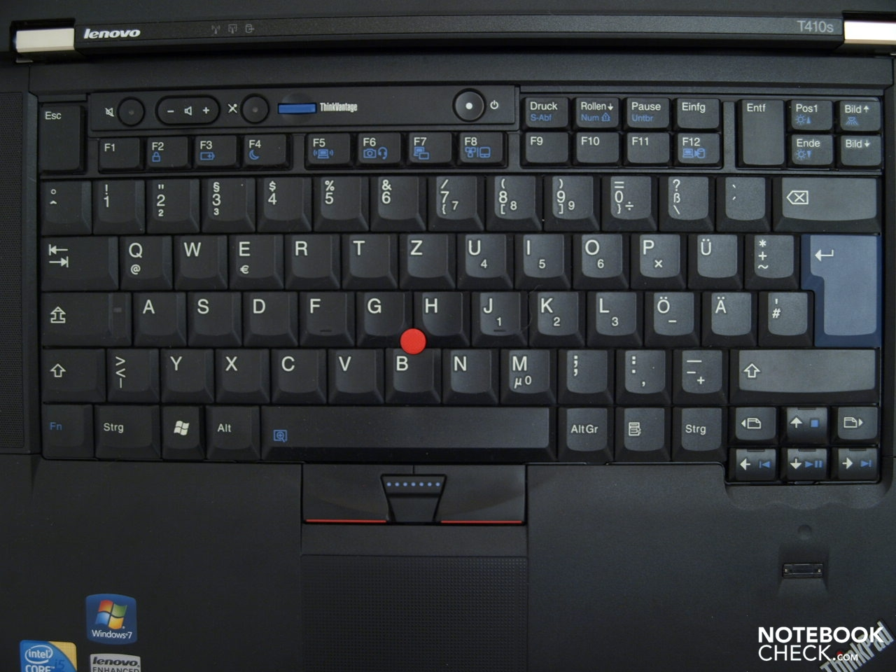

fanhan-inside 2022-07-24T07:43:38Z 先备份情报兼素材：
范某截图备份于此
这都是指名道姓的舆论，与其它指桑骂槐的「阴阳怪气」还不一样，可见有些事情纸里包不住火，在一衣带水的邻邦那边「统一教」曝光之后，我中华兲嘲上国「人民民主专政狼牙棒」也有敲不碎的天灵盖。
至于为啥本篇日志的标题是这样，因为十二年前的2010年7月23日晚六点，我拎着拉杆箱离开原公司。前天根据应景的实时舆论补充了《新时代兲朝特色奴隶制度》 一篇谈笑风生，大致提及了当初遭遇的「独特」待遇，就连「五百强央企」都这样，根红苗正忠君爱国童年才俊总不能把所有脏水一股脑泼到「私营企业资本家」头上去吧？
现在回顾，自打原公司合资并更名之后，或许就与「统一教」有着千丝万缕的联系（从名称的语义及语用可以看出来），之前「管理层」的做派想必已经被「统一教人事部门」或者市面上「猎头机构」注意到了，那么说是「日本国企或党产」也不能算错嘛。于是有「日本华族专政铁拳」撑腰可以随时一个电话通知「日本警察」约谈个谁，并且在「日军离退休名将之花」据点招募大批「やくざgangster 」在与派出所隔墙相望的社区内部叫嚣隳突接待各路江湖好汉草莽豪杰地痞流氓泼皮无赖「共商大计」，也是可以理解的嘛。
而十二年前的今天，也就是离职后第二天，上午家贼破门而入看着我傻笑，问它笑什么，它能笑着说「我没笑啊」。当时我的心就凉透了，正常的「家属」获知「亲人」变无业的时候，肯定不是这种表现，哪怕骂几句「怎么就辞职了」也算正常，能笑得那么开心可见早有预谋。之前近一个月都是天天上午过来盯着我，因为正在交接期，每天上午出门前，都能等到家贼进门探头探脑，经常还在洗澡的时候听见门开了，然后家贼进屋把卫生间门一拉「儿砸！洗澡呐？」，骂过多次「你丫烦不烦吖，天天特么过来骚扰」，家贼嬉皮笑脸不以为然。
然后就是家贼长达十一年多的伪装阶段，什么「爹也是为你好」了「家里还会害你伐」了，还有「儿砸！爹带你去」干这干那，包括不限于当众一路小跑追公交车，推销「宫廷结构性优化每年向社会输出十年经验的平庸肉便器四位数」，于是大力推广「公车私用」并在传销组织的协助下摊派「五十块钱包月的破鞋」。
至于为啥看我离开「有统一教背景的合资企业」那么开心，总不能听了个「统一教」的名词就开始按照大救星那数学不及格的「互斥」理念叫嚣「凡是统一教赞成的我们就反对，凡是统一教反对的我们就赞成」，众所周知（而大救星就不知道，奇哉）世界上邪教远远不止一种，即便在日本韩国也多如牛毛。那么家贼所属组织，也就是随时约谈家贼骚扰我并提供骚扰剧本并彩排的那帮「剧组」成员，可能是另外一种邪教，与统一教竞争同一个生态位，同时渗透执政的第一大党。
直到去年初开始，家贼频繁找我要钱，打着还是权威机构认证的户口本上面无法在我中华兲嘲上国自有国情在此的特色公检法系统当中否认的「血缘关系」招牌，由于理由奇葩（七万块钱交供暖费）并且超过我存款余额于是要不到了，就翻脸或曰把脸一抹显出本相了⸺无论家贼真实身份到底是什么都不可能是我的「亲人」。但是权威机构还在认证权威机构出版的户口本，11月2日、3日人民警察上门约谈并提供大批文件让我签字按手印以及通知家贼死亡的时候，还在拿户口本这种「证件」说事勒令办后事送最后一程（就是掏钱擦屁股收拾烂摊子），没听说如同市面上叫嚣「哪儿来的野种どちら貴様でしょうか ？滚蛋」那样「心慈手软」的给抹布剩下那么一丁点残余体力的。
家贼多年来能在「外人」的指挥下拼了老命折腾我还理直气壮肆无忌惮的倚仗，又要上溯到四十多年前「颁发证件」的时候了。
这种「证件」，权威机构（在一定的国际国内政治形势下）承认并坚决贯彻落实到有法可依有法必依执法必严违法必究的依法治国当中去，而当事人自己反而压根不当回事仅仅加以利用，奇哉。
fanhan-inside 2022-07-24T10:05:59Z 然后写写这些天都干了啥，只看本站（希帕索斯永垂不朽 ）会感觉更新频率明显降低，实际上并没闲着，虽然「真・红条见底」。
之前一直在同步建设「囧斋 」站，样式已经稳定，形式上最新的改版是运用「可变字体」，测试当中Win7下Chromium表现正常而FireFox Quantum显示不出来，但是在Win10下双方显示都正常，应该是操作系统与浏览器排版引擎之间就字体渲染等「灰色地带」的主权与治权的定义和实际执行发生了些许分歧。
而最新的内容更新，除了索引之外，就是把《恶补记》《设定集》当中涌现的脑洞和其它思路，都以卡片形式作为「手工维基」的条目整理完毕。而《异闻录》由于线索过于庞杂并且与现实关系过于紧密一时难以厘清头绪，仅放了背景。在那之前就已经把「手工问答」功能准备好并以《谈笑风生＠知乎》为素材，总结母题并罗列曾经的发言了。
在6月30日，看到人民群众发表情报工学之自力更生艰苦奋斗自己动手丰衣足食相关舆论之后心血来潮，把2017年底「Fan error」于是开机不能的十二年高寿之ThinkPad T410s翻出来，两条内存互换岗位，于是可以启动了。当时已经升级到Win10，更新一批软件之后，可以测试台式机上部分成果，包括但不限于俩个人博客站点。只不过由于屏幕分辨率只有1440×900，对于按照2017年「Laptop屏幕最低标准FullHD」也就是1920×1080分辨率设计的页面，显示有些不尽如人意（虽然通过「微软专利纵横滚轮鼠标」也可以凑活着看）。
7月1日和2日断电，日出而作日入而息，在阳台支起熨衣板当桌子，趁着天光看了四本实体书：
【日】海野一隆《地图的文化史》
【法】雅克・韦尔热《中世纪大学》
【日】井上顺孝（主编）《神社众神明》
【法】罗贝尔・福西耶《中世纪劳动史》
然后来电了计算机能用了，于是「社会与人文科学」相关实体书的阅读理解暂且告一段落，转向「理工科」相关领域继续。
手头有一本《Learning Ruby》是2007年买的，属于境外的应景入门读物的引进，但是如同其它大批技术书籍一般，一直由于忙于工作没来及深入阅读并实践。说过了截止到2010年夏至为止PC上能跑起来的技术都试过至少是见过，不是吹牛哔。并且正是由于什么狗屁「保密原则」「奉献精神」，但凡自行实践的技术，都与原公司技术栈毫无关系，无论业务范畴还是实现范畴。
翻出来看一眼，上面针对Ruby版本1.8，现在已经是3.0了，变化天翻地覆，这书本身也没有再版过，即便境外也是完成了历史使命功成身退的待遇。所以重新实践当中需要对具体代码大改特改，有的功能保留了，有的功能消灭了，重点集中在概念之上可也。类似的情况还有《Tcl/Tk权威编程指南》《Python与Tkinter编程》，讲述的是二十年前的过时伎俩，但如今市面上没有相关论述的替代品。
总之花了几天时间，确认了Windows环境确实不适合Ruby这个被大批先行者及相关从业者反复提醒的事实。
7月7日有燃气公司员工上门巡检，查了管线拍了气表关了阀门（我说一直也没用气，2007年初搬进来时管子都是截断的，现在这套是更换管线时新装的）填了单子让我签字，留下用户存根后走了。
顺便插播个人亲身经历的第一手材料：
囧斋怪奇事件簿かいきじけんぼ ：《两根三菱圆珠笔的故事》
前几年天然气管道改造，就有工人临走前说要「借根笔用」还特意强调「一会儿就还回来」，我就把当时正在随手使用的三菱0.5蓝黑圆珠笔 （UMN-207 Micro）给他了，直到现在就没见「还回来」，伴随着市面上「你写一段我抄一段」「代笔枪手」之类舆论。
总之管线改完了就有家贼搬了一台燃气灶过来，说将来它自己用 。
然后是2021年8月12日下午，我喝多了正在睡觉，家贼破门而入开灯把我推醒，说要去哪里写交待材料，让我「拿根笔用」，还特么反复吆喝「快！快点！给我找！」并且强调「不要钢笔，就要圆珠笔」。
我就把另外一根同种样式的三菱0.5蓝色圆珠笔 （UMN-207 Micro）拿给家贼，是上一根被拿走之后常用的，但家贼自己抓着一根三菱0.7黑色圆珠笔 （UMN-207GG）问「这根更好吧？」我说「你都提前决定了直接拿就是还问我干嘛」「哪次你不是开门进屋想拿啥就拿啥，买茶叶送的杯子都特么“你不用是吧爹拿走了”」「特意把我弄起来走个“亲手交付”的程序是不是？」
家贼气哼哼走了，我接着睡。过一阵迷迷糊糊听见家贼进屋口中哼了一声把啥扔在我身上然后撞门走了。等爬起来一看，地上掉了一张《中华人民共和国夫妻关系证明书》，应该就是如同甩扑克一样甩在我后背上弹到地上的。那时候已经因为要不到「七万元人民币交供暖费」显出本相了，但是户口本还有权威机构认证。而这张证件，就是证明户口本爹娘之间的夫妻关系，还有权威机构暴力机关背书。
所有相关当事人都已经不当回事的印刷品，居然还特么「有法律效力」，动辄还有人民警察接到啥电话不知道发生了什么就「奉命」约谈我……我没辙吖，于是写了一篇豆瓣广播《死间》 直接用作《异闻录》素材，拿前朝说事。
总之这根笔也没还回来，是家贼留在有关部门了呢，还就是故意不还了，反正不知道，距离死无对证没多久了。在那之前家贼就已经偷走我手机了，因为出门手机随身带着所以肯定等我在家的时候进门趁我去卫生间时下手。
然后市面上又是一大堆「你写一段我抄一段」「代笔枪手」之类舆论，可以与本篇日志开头备份的情报兼素材呼应，两根笔至少对应两颗冉冉升起の文坛巨星，曝光度较高的于是可能性较大的，一个公开打着「文抄公」招牌，另一个应该就是网友们早已经总结出但最近才达成共识开始频繁尊称的「马抄」。
7月8日，根据一衣带水の邻邦之应景新闻，写篇日志发表。
然后索性把ThinkPad T410s装上Ubuntu 22.04 LTS，下载光盘映像做成启动优盘，几个小时内搞定，除了一些硬件特征不支持于是启动时会显示一堆提示之外，一切正常。
接下来开始尽量复刻台式机工作环境，很多软件都可以照搬，甚至包括Microsoft Edge浏览器，还能登录账户实现同步。当然还有「跨平台」的VSCode、dotNet、PowerShell，装上之后按照官方文档照葫芦画瓢把「C#样板间」耍一遍，证明确实可以跑起来就行。
其它本来就应该在「＊ｎｉｘ」下面跑的软件当然直接装就行，Ubuntu官方仓库中版本太低还有软件供应方提供的deb包，以及其它第三方维护的Snap版、Flatpak版乃至Homebrew版，或者直接从源码编译安装，或者直接运行AppImage之类映像。总之GNU Octave、SciLab、SageMath、Maxima都装上了，其它大名如雷贯耳的在码农当中口耳相传的「生产力工具」也装上了，不必举例。
于是各种环境差不多都准备好了，通常各自写个「Hello, Kitty」或「Howdy, Pussy」确保能运行，就先放着，有备无患。然后继续恶补Ruby企图弥补当年遗憾，简单的「Ruby on Rails」在对实体书示范代码与时俱进的摸索着大改特改之后能跑起来，嗯，老眼昏花了但还没老糊涂。
到了7月11日，注册了GitLab帐号，准备开辟新战线，第三个「个人博客站点」专门用于试验「技术型文档」，以「Jupyter Book」基盘为原型，发现「GitLab Pages」服务稍微有些不一样，总之「流水线阻塞中」。
于是趁空注意其它环境配置，先把购买的几百种商业字体，都弄到笔记本上装到Ubuntu系统下面。再开始折腾输入法，发现若干国产流氓拼音在Linux下还是Windows下的做派，卡位占座「能抢绝不偷，能偷绝不骗，能骗绝不干」。于是「中国籍汉族人但被权威机构认证的户口本爹质疑“没有身份证”所以不想支持民族企业」全给删了，换成开源的「fcitx5」全家桶，中文日语都有了，凑合用没问题。顺便发现多年前购买的ATOK输入法的Linux版已经没了，支持还残留那么一点。
7月12日注意力重新回到「GitLab Pages」之上，由于是本地编译的「PlainHTML」后台处理相当于不存在，那么只要自定义个事实上啥也不干的runner注册，就可以确保流水线执行完毕，保持笔记本开机通讯几分钟就行。总之，第三个个人博客站点「囧斋之書 」上线了，内容也开始陆续发布了。
从当天下午开始左前额疼，睡一觉也没见好转。从7月13日开始一直疼到现在。
fanhan-inside 2022-07-24T12:04:31Z 继续，在这头疼的十天左右时间当中，也没闲着，只是「成果物」不甚充沛而已。
陆续更新《囧斋之書》的相关内容都已经尽量在页面当中写出来了。目前「先」用默认的Python练手而已，实际目的其实是SageMath、GNU Octave之类其它Kernel。最起码对于相关应用场景当中其它（脚本）语言在页面上出现的场合，也应该可以编译通过自动将执行结果嵌入才对。这些都需要试验，在已经过时许久没有各种官方支持的Win7台式机上，没有摸索着开工的必要性。
然后重点又回到了Ubuntu以及Linux环境之上，继续安装各种「平台」以针对技术型文档可能涉及的应用场景，包括但不限于已经捐赠给Apache的NetBeans及其老对头Eclipse，以及风头如日中天的JetBrains系列开发工具。下载了JetBrains的IntelliJ IDEA和PyCharm的免费社区版，其它产品没有社区版。
这个JetBrains，在市面上的舆论当中被称为「21世纪Borland」，无论是企业专攻领域还是生态位，都与上世纪最后二十年叱咤风云的Borland颇为类似。
然后想起Borland的开发工具已经打包卖给其它公司了，就找找相关情报。除了官方仍在更新产品之外，也有社区版（但没注册账户并下载）。第三方还有一些「情怀」，比如「OWLNext」项目上世纪末就开始了，Borland终止的产品线有别人维护，估计是老用户维护旧系统的需求。然后下载「Lazarus IDE」这个仿Delphi的开源替代品，先放着。
总之，虽然JetBrains紧跟技术潮流没有特化发展，但是实现的成品在大手会社或曰赛博朋克军阀的围剿当中，不知命运与Borland相比会如何。
顺便还下了个ZeroBrane Studio，是Lua专用的IDE，最近一次更新还是在2020年。这么简单的脚本语言为何需要集成开发环境，目前还不太清楚，优先级不高暂且放着。
然后关注其它Linux发行版，与Ubuntu相提并论的并都拥有稳定用户群体及活跃社区的，主要是Fedora与Manjaro，背后都有大手情报工学机构（以及提供融资和附带保驾护航武德服务的财团及军阀）撑腰。
Fedora的定位就是RedHat试验田，每半年一个版本，即便是服务器版也得半年重启一次，这也是若干用户吐槽的原因。除了官方的Workstation版之外，更感兴趣的是Fedora Labs那些定制版，都针对具体需求提前把相关软件打包配置好，每半年更新一次也可以接受。其中默认或曰特意强调用KDE环境的有科学计算、天文学、音乐三个，可见专业软件还是Qt/KDE所擅长的领域，应该与该框架发布较早流传较广开发团队比较稳定有关，软件套装「正规军」比较多，对比GTK/Gnome当中「散兵游勇」看着顺眼些，或许用着也顺手些吧。
因为其它Fedora Labs用来举例的典型应用大多已经装上了，甚至包括现在的KDE Applications官方网站上面推荐的那些，除非实在（需求原因）用不上或（硬件原因）用不了，于是根据当时娱乐至死の色目逗哔炒作的什么划时代大作，找了几个典型「游戏」试着安装，有的过期了或尚未针对Ubuntu22.04LTS版更新，有的不感兴趣，最后装了仨大作（Battle for Wesnoth、MegaGlest、FreeCiv），都能跑起来。至于Gnome/KDE自带的那些「小」游戏，当然本来就装上了，益智型的是否可供「消磨时间舒缓情绪」，各种操作系统之用户根据多年来经验见仁见智吧。
然后想起台式机上还有DVD刻录机呢，笔记本上还有DVD/CDR Combo呢，家里还有两个半桶的刻录盘呢，索性下载映像能刻的都刻了。途中刻坏过若干张，可能是刻录机过热的缘故，也可能是刻录盘变质的缘故，毕竟十来年没用过了。
然后就是继续移植台式机工作环境，虽然笔记本十二年高寿，但Ubuntu22.04LTS才一百天，再怎么说各种「跨平台（哪怕是号称的样子货表面光）」与时俱进的支持也会比多方放弃的Win7强许多。比方说去年在被家贼偷走手机并遭遇人民警察约谈前后为了《设定集》第二辑草稿而忙得热火朝天的「准备工作」，在个人博客站点之上就有四个测试页面：
除了LZMA那个由于托管服务方以安全原因阻止运行之外，其它三个都成功跑起来了，在「囧斋」站之上仅更新了「囧斋范某自作用字」系列准备工作，并没有重复这些已经测试通过的内容。
于是相关伎俩所需软件包，有的可以在系统更新内部解决，比如SQLite以及DB Browser乃至其它数据库（MySQL有些问题没有深究而是直接卸载）。有的则需要去其官网下载安装包自行解决，比如BaseX。有的就需要自己旁征博引广泛查询货比三家了，比如经过实际使用发现Linux下个人认为目前最方便的Git图形界面客户端Guitar 。
期间在GitHub Issues上久违的出现了「读者留言」，于是回复、备份、补充内容、上传，都是固定流程。自打被市面上色目情报掮客放话遭遇「邪教教主の绝罚」以来，不仅「读者」哑口无言，就连编号连续的issue都有两次中断，可见邪教绝罚令对于GitHub内部员工也有约束力，不知道是该员工乃以自然人身份渗透进去的邪教徒，还是邪教权力机构及武装力量以法人身份与微软谈判之后将GitHub收编于邪教伞下。
fanhan-inside 2022-07-24T13:57:51Z 再然后就是电子词典了，Ubuntu官方仓库里面就有俩知名的，StarDict与GoldenDict，在台式机上也有。前者直接跑不起来，但是另外一个图形用户界面前端「QStarDict」就可以，依赖原版目录与设定。于是倒腾「辞書」又是一段时间，重点还是在去年「准备工作」期间已经开始的相关内容与形式之上。
然后就到了这几天。7月22日星期五，晚上下雨的时候，窗外有人骂街，不止一个人。结合其它宣传阵地的舆论判断，估计「有人急了」，周末「会出事」。
这几天宣传阵地尤其是专攻情报工学领域的那些，涌现出大批广告及软文推销员。据知情人士分析，这是由于童年才俊陆续收到录取通知书了，于是各大「移动计算硬件厂商」不约而同开始了「杀猪季」，专宰筹备就学事宜的「乳猪」。总之「再过几个月电子产品市场才会恢复正常」。
由于目前正在用「旧瓶装新酒」与时俱进，所以对于相关情报略微展开了一些思路。比方说碰上推销MacBookAir M2的，第一反应就是「真・闭源」硬件架构向哪些关系户提供过技术资料？因为之前有移植Linux到Apple Silicone架构的项目，主要障碍就是硬件细节不公开，还不是当年Wintel联盟时期硬件一定程度可由软件定制的局面。
这个问题已经有答案了，「视频处理」相关厂商吖，苹果新架构的卖点就是这个，吹得凶的也是这个领域的从业者。至于其它通用甚至专用计算的软件是否有过针对性优化，那就不好说了。
比方说，提到的Mathematica，一直都有Mac版，最起码Intel时期的编译优化还算方便，现在呢？而Matlab也类似。若是大批厂商都懒得针对性优化甚至都懒得重新编译发布，那么模拟器上跑计算密集型应用……画面太美不看。
这里插一句，我在2003年买过《Mathematica全书》（The Mathematica Book）第四版，对应Mathematica 4.0，正是该软件开发者及相关企业创始人斯蒂芬・沃尔夫雷姆著，国内由西安交通大学独家引进的官方文档，定价六十元人民币，还注明精装本八十元。手头这本正版装潢精良不知道是平装本还是精装本，忘了当年花多少钱了，反正没打折。而Matlab的相关书籍买了十几本，都是境内相关从业者自己写的，除了本体之外就是若干主要的工具箱。
在《三自造字运动》 的开场白部分，写过了曾经真金白银购买过大批「正版」实体书和软件（以及部分游戏），还通过「大中华区代理」购买过许多没有境内销售渠道的「正版」国外软件产品，直到发现「注册机」这种东西之后意识到上当为止。之后就尽量通过正规渠道购买了，人在境外直接买，不在境外就通过各种「手眼通境外」的大手电子商务平台。
在《囧斋之書》当中也直截了当提到了，就是由于坚持「个人博客」的定位，所以若对于商业软件有需要也会由个人出资购买并且没有任何企图「报销」或通过其它方式转嫁成本的动机乃至实际操作，绝对不能被擅长撒谎偷窃诈骗的伪装成企事业单位的邪教下属机构将其歪曲为「职务行为」从而实现为敛财不择手段之「手眼通中央军委/政法委」人脉充沛の邪教头目最高指示精神。
回到话题，既然针对性优化可能性不大，那么缺乏（除二、三次元动静设计及音视频行业外）几乎其它所有领域专业软件支持的苹果机……目前值得「抢购」么？
换成公开硬件体系的通用架构也一样，比方说最近吹被「AMD YES」逼得不挤牙膏的Intel推出第12代芯片，特征就是啥大核带小核，并提醒若无第11代Windows领导调度相关事宜，人力资源部门的邪教徒就会故意将重负载放在小核上，以腾出大核从事宗教相关活动进行敛财。
然后我就参考往事或曰历史经验，查阅Intel C/C++ and Fortran（支持Win、Mac、Linux）以及AMD Optimizing C/C++ and Fortran（仅针对Linux）相关情报。前者在攒机用Intel架构的时候用过，安装之后可以集成在Visual Studio内部，编译的结果尺寸略大但速度较快。后来另攒一台换用AMD处理器了，就没再继续，而AMD编译器一直也没环境（AMD机器上运行Linux）使用。
那么，Wintel联盟是否还存在，各个专业软件供应商是否会使用Intel特供编译器提供针对性优化并有微软指天发誓拍胸脯保证不会出现调度失误或曰被邪教篡夺了主板和操作系统领导权。
这些问题不关心，那么号称弯道超车后来居上の发达国家粉碎机之革命螺丝钉的我中华兲嘲上国新时代情报工学童年才俊都关心啥呀？就看杭州深圳等地的从业人员主动爆料，开发个智能手机哎屁屁还能「一核有难七核围观」呢，美术兲才配图是工地上七个领导手扶叉腰肌盯着一个员工挖坑。
然后就到了昨晚六点，十二年前「拎着拉杆箱滚蛋」的时间点。这时候没啥好「伤感」的，理由见上。只不过有些相关发散性思维，就像「曾经忙得没有业余时间博学无方，哪怕仅限情报工学领域」那样。
简单说，目前家里一堆旧笔记本，相关厂商都还在，活得是否滋润另说，公开情报不支持危如累卵眼瞅着就要完蛋之类宣传文案。那么按照产品线生态位，当代应该有对应的型号，于是顺便找了找相关电子产品的消息。
最早的笔记本是2003年境内购买的Sony VAIO PCG-SRX55TC，十寸屏幕的生态位到现在已经下放到「平板电脑」当中了，无论iPad还是Surface或是其它安卓或自制系统，都占据了这个尺寸的生存空间。目前已经转让的的VAIO产品线当中，尺寸最小的也有12.5寸，这就是「Laptop屏幕最低标准FullHD」这个说法不知不觉普及推广以来的变化。
然后就是2004年境内购买的Apple iBook G4，处理器还是PowerPC架构，当时的动机就是「换个硬件体系试试」。后来用得不多，到2007年，已经装上OpenBSD了，但还是没时间实践什么伎俩。具体到「另一种硬件体系」，现在已经到处都是ARM了，除了智能手机之外，微软自己都有支持，并不奇怪。倒是macppc架构比较罕见，昨天一搜，OpenBSD最新版（7.1）还是能在iBook G4上面安装，当然只有基本功能，不过当个带俩仨低负载用户的小服务器或许足够了。
而2007年购买的还印着IBM商标的Thinkpad X60，十二寸商务本，可以勉强跑Win7 Home Basic，目前仍然可以使用。只不过内置电池和主板电池都坏了，每次启动都要外接电源并设置日期时间，没有抢救来用做纯文档备份的必要了。但是仅看其配置，还是能跑一些早期的Linux发行版，不过没有必要。占据这个生态位的，就是当前仍然存在的十二寸笔记本，松下QV系列就是典型，写着「12.0型」，与SV系列那「12.1型」（带光驱）都有区别。看尺寸，估计可以原封不动塞进同一个（当时特意找的）12寸专用内胆当中。
这都是「便携」端产品，因为当年上班的时候有「背着包到处溜达」需求，真正做点事情还得台式机大屏幕全尺寸键盘鼠标更合适。而自打「游戏本」或曰「娱乐至死游击队专用设备」出现之后，如今的笔记本也有带数字小键盘的版本出现，乃至面向商务办公的产品当中15寸及以上也可能会配置带有数字小键盘的全尺寸键盘。
那么顺便找了找「可暂时替代台式机生态位且手感保持基本不变」的笔记本，境内「美系御三家」联想戴尔惠普都有对应产品线，而其它小厂商的「游戏本」也有不少。日本那边，富士通的大号笔记本也有合理产品，比如17.3寸一种、15.6寸的两种，都是「FullHD」屏幕并且全尺寸带小键盘。这种「移动工作站」用于复刻目前台式机工作环境提供略有适应过程的无缝切换也足以胜任。
然后就到了半夜十二点，上床睡觉。
fanhan-inside 2022-07-24T14:28:43Z 之所以没有特别注意Manjaro Linux，因为其所依赖的原型是Arch Linux，而目前的台式机上的MSYS2 MinGW环境，就是同样的包管理器Pacman，大致上都更新了啥目前能用啥略有了解。将来若有需求，比方说家里还有俩老迈年高台式机残骸，就是上面提到的先攒了个Intel架构小机箱（就是试验Intel C/C++那台），再攒了个AMD架构大机箱（这个就是2016-2018被黑客或曰红客连续钦定蓝屏死机弄坏的那台），重新攒两台分别装不同发行版也可以。
别的没啥好写的，扣题起见，把十二年前这两天的手写日记照搬上来：
囧斋起居注・日记
2010年7月23日
今天睡足了，中午才到，在楼下7-11买了午饭上楼。
午饭：
川味鸡丝凉面 ￥7.60
混合水果切块组合 ￥5.50
鸡蛋土豆沙拉（大） ￥4.90
可人蔬番混 ￥5.50
KAGOME一日 ￥7.90
KAGOME胡混 ￥7.90
KAGOME葡混 ￥7.80
黑乌龙茶 ￥5.50
超市袋（大） ￥0.20
下午交代工作，填各种单子，写信，收拾东西，到最后装满一个拉杆箱。
还有一个快递没收到，和同事们说一声，下周五聚餐的时候，我再来拿。
就这么拎着箱子走掉，如果不是还有欢送会，到此为止也不错，结束了。
晚饭：
啤酒×4 ￥16.00
脆骨×10 ￥10.00
骨肉相连×5 ￥10.00
烤肥腰 ￥6.00
拍黄瓜 ￥6.00
其中7-11在原公司楼下底商，日记中按照购物小票写的，「可人蔬」「KAGOME」是品牌，「番混」是番茄混合蔬果汁，「胡混」是胡萝卜混合蔬果汁，「葡混」是葡萄混合蔬果汁，「一日」对应日本商品名野菜一日、これ一本 。
晚饭在住处古拉格北里社区外不远的清真餐馆。
囧斋起居注・日记
2010年7月24日
睡到自然醒，洗衣服。
午饭：
没吃完，感觉肉夹馍和酿皮都不好吃，以后来这里就是吃面了。
下午睡了两个小时，还行，挺爽。
晚饭：
脆骨×10 ￥10.00
鸡胗×5 ￥10.00
烤肥腰 ￥6.00
新疆凉菜 ￥6.00
啤酒×4 ￥16.00
回家洗澡睡觉。
其中午饭在古拉格北里社区内部的某家刚开业的馆子，那个位置经常「城头变幻大王旗」，当时是「西北」什么连锁，后来是「卤煮火烧」，再后来是「铁盘烤肉」，然后又换过几次就没啥印象了。晚饭还是与前一天同样的清真馆子。
备份这些史料，至少能记录当时的物价吧。
fanhan-inside 2022-07-25T06:18:58Z 睡一觉起来发现繁荣的简体中文互联网上涌现出大批从小比人奸诈还比人努力的未成年混混炫耀听教父的话跟慈父走终于保送985/211/731大手名校然后自作多情叫嚣着中国人就要支持民族企业，到处推销「阅兵式你看了没有？咱中国今非昔比啦！」之类扬我国威壮我军威主旋律正能量。
前情提要：
那么有些常识或曰前因后果就需要交代一下了，比方说十二年前为啥挑了水货ThinkPad T410s，屏幕上只有一个坏点的出口转内销产品，使用体验参考其它用户的舆论，应该比「国行」正版品质还高。
贴几个网上找的实机键盘图：
范某截图备份于此

我手头这台，是第一款「美式键盘」布局，其它语种的键盘布局都一样，ESC 和DEL 键都特意加大以方便用户。
前情提要：
这就是《设定集》第二辑草稿〈都是月亮惹的祸〉 当中「一千五百杜卡特的解决方案」情节的出处，而2007年赛博朋克土豪给我推荐的方案是《1490美元的昂贵键盘配备LED发光按键》 ，无一字无来历。
我用计算机敲键盘，除了写代码就是写字，除了钦定死机或卡壳之类天灾人祸之外，不操心键盘好用不好用还应该率先操心啥？
后来的「键盘设计」实机图片网上有得是，各位自己去看，是不是「又改回去了」？
除了联想还有戴尔惠普，这美系御三家大手会社的精品移动工作站之键盘「设计」如今都一样，中看不中用。后两者也就罢了，老外自己忍了多久咱不关心，反倒是「民族企业」开倒车走回头路还出动黑白两道充沛人脉喂国家公务员、地方公务员、国企职员以及人民群众吃屎，还有宣传部门倒打一耙贼喊捉贼狂喷持不同用户体验者「你有中华人民共和国权威机构承认的身份证么？」
然后再去对比昨天特意找到并提到的富士通大号笔记本，NH（17.3）、AH（15.6）、TH（15.6）的介绍页面，看看那些键盘的设计，虽然没到特意加大常用键的程度，也算是用心了，再空想一下使用体验，有没有什么想法。
顺便再把《两根三菱圆珠笔的故事》相关的背景以及前因后果补充说明。
前情提要：
关于钢笔和圆珠笔的个人亲身经历的第一手材料以及心得体会，都已经夹叙夹议的写进去了，此处不再重复。
在日本主要用派通（Pentel）的中性笔，主要是因为在「选购」之前（我在应急时去百元店随手抓一根的都是一次性用品通常称「直液式签字笔」「财务走珠笔」那种）货比三家的时候，网上查到「中性墨水（Gel-Ink）」这个概念就是派通率先发明的，然后开始用派通。随后继续广度优先搜索文具使用经验时发现其它友商后来居上，三菱铅笔出品的各种文具反而品质最高，至少当时是这样。
于是回国的时候，攒了一大堆派通笔芯，笔杆有一些，但都在几年内用坏了。不过境内大手电子商务平台上面好歹有「代购」，于是一些日本大手文具会社的产品尤其是「耗材」可以继续补充，再过几年境内也有正规销售渠道。本来的意图是用光笔芯之后拉倒换其它品牌，只不过……在举头三尺有棱镜并且剧组指使家贼24×7全方位骚扰无死角的情况下，企图读书看报识文断字至少恶补数学的时候，撑死三十秒就有家贼破门而入唠唠叨叨瞎鸡巴忙活，楼上砸凳子跺脚更是实时响应。
前情提要：
所以手写的场合越来越少，不仅仅是这十年或十二年。权威机构认证的户口本上记载，2007年1月23日我的户口就从古拉格南里迁到古拉格北里现在住所了，当时我还没回国呢。按照市面上色目情报掮客的说法，这个内置军休所外置派出所的社区，是一所「军校」，专门传授撒谎偷窃诈骗伎俩。到现在整整十五年都没毕业的，只有「智商甚低情商极低死脑筋不会通权达变」的我一个人，其它高材生都众筹集资或P2P或网络赌博完成毕业设计服从分配走上工作岗位去了也。
回到话题，比如手写日记的时候就是每天换用一种颜色，于是可以肉眼分辨出日期区分，便于快速翻阅查找，其它手写文件档案以及备忘录之类也是类似的原则。总之到后来不再手写日记之后，钢笔经常由于不常用而墨胆蒸发精光，于是偶尔写字常用的就是三根三菱0.5圆珠笔。
而蓝黑、纯蓝、黑三种颜色的优先顺序，是学生时代用钢笔形成的习惯，纯蓝是染料墨水溶于水，炭素墨水会堵笔，于是鞣酸蓝黑墨水最常用。而现在用的钢笔墨水都是PH值中性的颜料墨水，百乐蓝黑、纯蓝，写乐极黑。圆珠笔无论中性油性，也都是可以长期保存的记录媒介。
于是燃气管道工人和家贼找我「借」圆珠笔的时候，我很善良的把自己常用的笔借出去，于是荣获了色目情报掮客颁发的「十年蠢货百年傻哔」社会达尔文主义金奖。